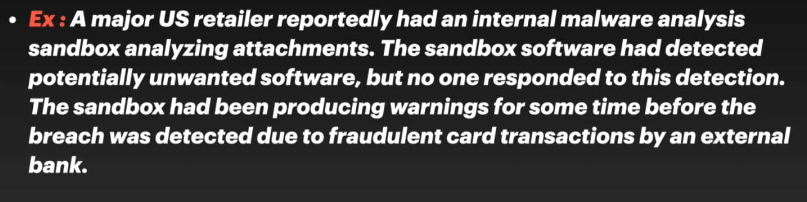

Insuff. logging and Monetering- Insufficient logging, detection, monitoring and active response leads to this attack
- Auditable events, such as logins, failed logins, and high-value transactions are not logged
- Logs are stored locally
- The application is unable to detect,escalate, or alert for active attacks in real time or near real time.
Why it Happens- You are vulnerable to information leakage if you make logging and alerting events visible to a user or an attacker
- Log everything- access controlfailures, and server-side input validation failures,damn everything!
What can be achieved by it- You are vulnerable to information leakage if you make logging and alerting events visible to a user or an attacker.
- 
How do we fix ILAM issues- Ensure effective logging and monitoring
- Usage of good monitoring andalerting protection
- Log, Log Log!